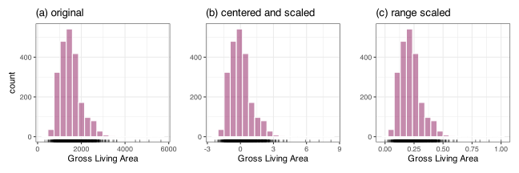
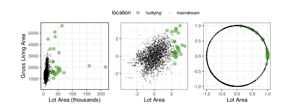

5 Transforming Numeric Predictors
Data that are available for modeling are often collected passively without the specific purpose of being used for building a predictive model. As an example, the Ames Housing data contains a wealth of information on houses in Ames, Iowa. But this available data may not contain the most relevant measurements for predicting house price. This may be due to the fact that important predictors were not measured. Or, it may be because the predictors we have collected are not in the best form to allow models to uncover the relationship between the predictors and the response.
As mentioned previously, feature engineering is the process of representing your predictor data so that the model has to do the least amount of work to explain the outcome effectively. A tool of feature engineering is predictor transformations. Some models also need predictors to be transformed to meet the model’s mathematical requirements (i.e., pre-processing). In this chapter we will review transformations for quantitative predictors.
We will begin by describing transformations that are applied to one predictor at a time that yield a revised for of the predictor (one in, one out). After these, an example of a group transformation is described called the spatial sign. Later, Chapter 7 will describe different types of many-to-many transformations such as principal component analysis (PCA) and multidimensional scaling (MDS). Additionally, in Chapter 8, we will examine techniques for expanding a single numeric predictor to many predictors (one in, many out).
Let’s begin by understanding some general data characteristics that need to be addressed via feature engineering and when transformations should be applied.
5.1 What are Problematic Characteristics, and When Should Transformations be Applied?
Common problematic characteristics that occur across individual predictors are:
- skewed or unusually shaped distributions,
- sample(s) that have extremely large or small values, and
- vastly disparate scales.
Some models, like those that are tree-based, are able to tolerate these characteristics. However, these characteristics can detrimentally affect most other models. Techniques used to address these problems generally involve transformation parameters. For example, to place the predictors on the same scale, we would subtract the mean of a predictor from a sample and then divide by the standard deviation. This is know as standardizing and will be discussed in the next section.
What data should be used to estimate the mean and standard deviation? Recall, the training data set was used to estimate model parameters. Similarly, we will use the training data to estimate transformation parameters. When the test set or any future data set are standardized, the process will use the estimates from the training data set. Any model fit that uses these standardized predictors would want new samples being predicted to have the same reference distribution.
Suppose that a predictor column had an underlying Gaussian distribution with a sample mean estimate of 5.0 and a sample standard deviation of 1.0. Suppose a new sample has a predictor value of 3.7. For the training set, this new value lands around the 10th percentile and would be standardized to a value of -1.3. The new value is relative to the training set distribution. Also note that, in this scenario, it would be impossible to standardize using a recomputed standard deviation for the new sample (which means we try to divide with a zero standard deviation).
Many transformations that involve a single predictor change the data distribution. Most predictive models do not place specific parametric assumptions on the predictor variables (e.g., require normality), but some distributions might facilitate better predictive performance than others.
TODO some based on convention or scientific knowledge. Others like the arc-sin (ref The arcsine is asinine: the analysis of proportions in ecology) or logit? See issue #10.
The next two sections will consider two classes of transformations for individual predictors: those that resolve distributional skewness and those that convert each predictor to a common distribution (or scale).
5.2 Resolving Asymmetry and Skewness
An asymmetric statistical distribution is one in which the probability of a sample occurring is not symmetric around the center of the distribution (e.g., the mean). For example, Figure 5.1 (panel a) shows the training set distribution of the lot area of houses in Ames. There is a much higher likelihood of the lot area being lower than the mean (or median) lot size. There are fewer large lots than there are proportionally smaller lots. And, in a few cases, the lot sizes can be extremely large.
The skew of a distribution indicates the direction and magnitude of the asymmetry. It can be quantified using the skewness statistic:
\[\begin{align} skewness &= \frac{1}{(n-1)v^{3/2}} \sum_{i=1}^n (x_i-\overline{x})^3 \notag \\ \text{where}\quad v &= \frac{1}{(n-1)}\sum_{i=1}^n (x_i-\overline{x})^2 \notag \end{align} \]
where values near zero indicate a symmetric distribution, positive values correspond a right skew, and negative values left skew. The lot size data are significantly right-skewed (with a skewness value of 13.5). As previously mentioned, there are 2 samples in the training set that sit far beyond the mainstream of the data.
One might infer that “samples far beyond the mainstream of the data” is synonymous with the term “outlier”; The Cambridge dictionary defines an outlier as
a person, thing, or fact that is very different from other people, things, or facts […]
or
a place that is far from the main part of something
These statements imply that outliers belong to a different distribution than the bulk of the data. For example, a typographical error or an incorrect merging of data sources could be the cause.
The Croarkin et al. (2012) describes them as
an observation that lies an abnormal distance from other values in a random sample from a population
In our experience, researchers are quick to label (and discard) extreme data points as outliers. Often, especially when the sample size is not large, these data points are not abnormal but belong to a highly skewed distribution. They are ordinary in a distributional sense. That is the most likely case here; some houses in Ames have very large lot areas, but they certainly fall under the definition of “houses in Ames, Iowa.” These values are genuine, just extreme.
This, by itself, is okay. However, suppose that this column is used in a calculation that involves squaring values, such as Euclidean distance or the sample variance. Extreme values in a skewed distribution can influence some predictive models and cause them to place more emphasis on these predictors1. When the predictor is left in its original form, the extreme samples can end up degrading a model’s predictive performance.
One way to resolve skewness is to apply a transformation that makes the data more symmetric. There are several methods to do this. The first is to use a standard transformation, such as logarithmic or the square root, the latter being a better choice when the skewness is not drastic, and the data contains zeros. A simple visualization of the data can be enough to make this choice. The problem is when there are many numeric predictors; it may be inefficient to visually inspect each predictor to make a subjective judgment on what if any, transformation function to apply.
Box and Cox (1964) defined a power family of transformations that use a single parameter, \(\lambda\), for different methods:
- no transformation via \(\lambda = 1.0\)
- square (\(x^2\)) via \(\lambda = 2.0\)
- square root (\(\sqrt{x}\)) via \(\lambda = 0.5\)
- logarithmic (\(\log{x}\)) via \(\lambda = 0.0\)
- inverse square root (\(1/\sqrt{x}\)) via \(\lambda = -0.5\)
- inverse (\(1/x\)) via \(\lambda = -1.0\)
and others in between. The transformed version of the variable is:
\[ x^* = \begin{cases} \lambda^{-1}(x^\lambda-1) & \text{if $\lambda \ne 0$,} \\[3pt] log(x) &\text{if $\lambda = 0$.} \end{cases} \]
Their paper defines this as a supervised transformation of a non-negative outcome (\(y\)) in a linear regression model. They find a value of \(\lambda\) that minimizes the residual sums of squared errors. In our case, we can co-opt this method to use for unsupervised transformations of non-negative predictors (in a similar manner as Asar, Ilk, and Dag (2017)). Yeo and Johnson (2000) extend this method by allowing the data to be negative via a slightly different transformation:
\[ x^* = \begin{cases} \lambda^{-1}\left[(x + 1)^\lambda-1\right] & \text{if $\lambda \ne 0$ and $x \ge 0$,} \\[3pt] log(x + 1) &\text{if $\lambda = 0$ and $x \ge 0$.} \\[3pt] -(2 - \lambda)^{-1}\left[(-x + 1)^{2 - \lambda}-1\right] & \text{if $\lambda \ne 2$ and $x < 0$,} \\[3pt] -log(-x + 1) &\text{if $\lambda = 2$ and $x < 0$.} \end{cases} \]
In either case, maximum likelihood is also used to estimate the \(\lambda\) parameter.
In practice, these two transformations might be limited to predictors with acceptable density. For example, the transformation may not be appropriate for a predictor with a few unique values. A threshold of five or so unique values might be a proper rule of thumb (see the discussion in Section 13.4). On occasion the maximum likelihood estimates of \(\lambda\) diverge to huge values; it is also sensible to use values within a suitable range. Also, the estimate will never be absolute zero. Implementations usually apply a log transformation when the \(\hat{\lambda}\) is within some range of zero (say between \(\pm 0.01\))2.
For the lot area predictor, the Box-Cox and Yeo-Johnson techniques both produce an estimate of \(\hat{\lambda} = 0.15\). The results are shown in Figure 5.1 (panel b). There is undoubtedly less right-skew, and the data are more symmetric with a new skewness value of 0.114 (much closer to zero). However, there are still outlying points.
There are numerous other transformations that attempt to make the distribution of a variable more Gaussian. Table 5.1 shows several more, most of which are indexed by a transformation parameter \(\lambda\).
| Name | Equation | Source |
|---|---|---|
| Modulus | \[x^* = \begin{cases} sign(x)\lambda^{-1}\left[(|x|+1)^\lambda-1\right] & \text{if $\lambda \neq 0$,}\\[3pt] sign(x) \log{(|x|+1)} &\text{if $\lambda = 0$} \end{cases}\] | John and Draper (1980) |
| Bickel-Docksum | \[x^* = \lambda^{-1}\left[sign(x)|x| - 1\right]\quad\text{if $\lambda \neq 0$}\] | Bickel and Doksum (1981) |
| Glog / Gpower | \[x^* = \begin{cases} \lambda^{-1}\left[({x+ \sqrt{x^2+1}})^\lambda-1\right] & \text{if $\lambda \neq 0$,}\\[3pt] \log({x+ \sqrt{x^2+1}}) &\text{if $\lambda = 0$} \end{cases}\] | Durbin et al. (2002), Kelmansky, Martínez, and Leiva (2013) |
| Neglog | \[x^* = sign(x) \log{(|x|+1)}\] | Whittaker, Whitehead, and Somers (2005) |
| Dual | \[x^* = (2\lambda)^{-1}\left[x^\lambda - x^{-\lambda}\right]\quad\text{if $\lambda \neq 0$}\] | Yang (2006) |
Skewness can also be resolved using techniques related to distributional percentiles. A percentile is a value with a specific proportion of data below it. For example, for the original lot area data, the 0.1 percentile is 4,726 square feet, which means that 10% of the training set has lot areas less than 4,726 square feet. The minimum, median, and maximum are the 0, 50th and 100th percentiles, respectively.
Numeric predictors can be converted to their percentiles, and these data, inherently between zero and one, are used in their place. Probability theory tells us that the distribution of the percentiles should resemble a uniform distribution. This results from the transformed version of the lot area shown in Figure 5.1 (panel c). For new data, values beyond the range of the original predictor data can be truncated to values of zero or one, as appropriate.
Additionally, the original predictor data can be coerced to a specific probability distribution. Peterson and Cavanaugh (2020) define the Ordered Quantile (ORQ) normalization procedure. It estimates a transformation of the data to emulate the true normalizing function where “normalization” literally maps the data to a standard normal distribution. In other words, we can coerce the original distribution to a near exact replica of a standard normal. Figure 5.1 (panel d) illustrates the result for the lot area. In this instance, the resulting distribution is precisely what would be seen if the true distribution was Gaussian with zero mean and a standard deviation of one.
In Section 5.4 below, another tool for attenuating outliers in groups of predictors is discussed.
5.3 Standardizing to a Common Scale
Another goal for transforming individual predictors is to convert them to a common scale. This is a pre-processing requirement for some models. For example, a K-nearest neighbors model computes the distances between data points. Suppose Euclidean distance is used with the Ames data. One predictor, the year a house was built, has training set values ranging between 1872 and 2010. Another, the number of bathrooms, ranges from 0 to 5. If these raw data were used to compute the distance, the value would be inappropriately dominated by the year variable simply because its values were large. See TODO appendix for a summary of which models require a common scale.
The previous section discussed two transformations that automatically convert predictors to a common distribution. The percentile transformation generates values roughly uniformly distributed on the [0, 1] scale, and the ORQ transformation results in predictors with standard normal distributions. However, two other standardization methods are commonly used.
First is centering and scaling (as previously mentioned). To convert to a common scale, the mean (\(\bar{x}\)) and standard deviation (\(\hat{s}\)) are computed from the training data and the standardized version of the data are \(x^* = (x - \bar{x}) / \hat{s}\). The shape of the original distribution is preserved; only the location and scale are modified to be zero and one, respectively.
In Section 6.2, methods are discussed to convert categorical predictors to a numeric format. The standard tool is to create a set of columns consisting of zeros and ones called indicator or dummy variables. When centering and scaling, what should we do with these binary features? These should be treated the same as the dense numeric predictors. The result is that a binary column will still have two unique values, one positive and one negative. The values will depend on the prevalence of the zeros and ones in the training data. While this seems awkward, it is required to ensure each predictor has the same mean and standard deviation. Note that if the predictor set is only scaled, Gelman (2008) suggests that the indicator variables be divided by two standard deviations instead of one.
Figure 5.2(b) shows the results of centering and scaling the gross living area predictor from the Ames data. Note that the shape of the distribution does not change; only the magnitude of the values is different.

Another common approach is range standardization. Based on the training set, a predictor’s minimum and maximum values are computed, and the data are transformed to a [0, 1] scale via
\[ x^* = \frac{x - \min(x)}{\max(x) - \min(x)} \]
When new data are outside the training set range, they can either be clipped to zero/one or allowed to go slightly beyond the intended range. The nice feature of this approach is that the range of the raw numeric predictors matches the range of any indicator variables created from previously categorical predictors. However, this does not imply that the distributional properties are the same (e.g., mean and variance) across predictors. Whether this is an issue depends on the model being used downstream. Figure 5.2(c) shows the result when the gross living predictor is range transformed. Notice that the shape of the distributions across panels (a), (b), and (c) are the same — only the scale of the x-axis changes.
5.4 Spatial Sign
Some transformations involve multiple predictors. An upcoming chapter describes a specific class of simultaneous feature extraction transformations. Here, we will focus on the spatial sign transformation (Serneels, Nolf, and Espen 2006). This method, which requires \(p\) standardized predictors as inputs, projects the data points onto a \(p\) dimensional unit hypersphere. This makes all of the data points equally distant from the center of the hypersphere, thereby eliminating all potential outliers. The equation is:
\[ x^*_{ij}=\frac{x_{ij}}{\sum\limits^{p}_{j=1} x_{ij}^2} \]
Notice that all of the predictors are simultaneously modified and that the calculations occur in a row-wise pattern. Because of this, the individual predictor columns become combinations of the other columns and now reflect more than the individual contribution of the original predictors. In other words, after this transformation is applied, if any individual predictor is considered important, its significance should be attributed to all of the predictors used in the transformation.
Figure 5.3 shows predictors from the Ames data. In these data, we somewhat arbitrarily labeled 29 samples as being “far away” from most of the data in either lot area and/or gross living area. Each of these predictors may follow a right-skewed distribution, or there is some other characteristic that is associated with these samples. Regardless, we would like to transform these predictors simultaneously.
The second panel of the data shows the same predictors after an orderNorm transformation. Note that, after this operation, the outlying values appear less extreme.

The panel on the right shows the data after applying the spatial sign. The data now form a circle centered at (0, 0) where the previously flagged instances are no longer distributionally abnormal. The resulting bivariate distribution is quite jarring when compared to the original. However, these new versions of the predictors can still be important components in a machine-learning model.
Chapter References
Asar, O, O Ilk, and O Dag. 2017. “Estimating Box-Cox Power Transformation Parameter via Goodness-of-Fit Tests.” Communications in Statistics-Simulation and Computation 46 (1): 91–105.
Bickel, P, and K Doksum. 1981. “An Analysis of Transformations Revisited.” Journal of the American Statistical Association 76 (374): 296–311.
Box, GEP, and D Cox. 1964. “An Analysis of Transformations.” Journal of the Royal Statistical Society. Series B (Methodological), 211–52.
Croarkin, C, P Tobias, J Filliben, B Hembree, W Guthrie, L Trutna, and J Prins, eds. 2012. NIST/SEMATECH e-Handbook of Statistical Methods. NIST/SEMATECH. http://www.itl.nist.gov/div898/handbook/.
Durbin, B, J Hardin, D Hawkins, and D Rocke. 2002. “A Variance-Stabilizing Transformation for Gene-Expression Microarray Data.” Bioinformatics 18.
Gelman, A. 2008. “Scaling Regression Inputs by Dividing by Two Standard Deviations.” Statistics in Medicine 27 (15): 2865–73.
John, J, and N Draper. 1980. “An Alternative Family of Transformations.” Journal of the Royal Statistical Society Series C: Applied Statistics 29 (2): 190–97.
Kelmansky, D, E Martínez, and V Leiva. 2013. “A New Variance Stabilizing Transformation for Gene Expression Data Analysis.” Statistical Applications in Genetics and Molecular Biology 12 (6): 653–66.
Peterson, R, and J Cavanaugh. 2020. “Ordered Quantile Normalization: A Semiparametric Transformation Built for the Cross-Validation Era.” Journal of Applied Statistics 47 (13-15): 2312–27.
Serneels, S, E De Nolf, and P Van Espen. 2006. “Spatial Sign Preprocessing: A Simple Way to Impart Moderate Robustness to Multivariate Estimators.” Journal of Chemical Information and Modeling 46 (3): 1402–9.
Whittaker, J, C Whitehead, and M Somers. 2005. “The Neglog Transformation and Quantile Regression for the Analysis of a Large Credit Scoring Database.” Journal of the Royal Statistical Society Series C: Applied Statistics 54 (5): 863–78.
Yang, Z. 2006. “A Modified Family of Power Transformations.” Economics Letters 92 (1): 14–19.
Yeo, I, and R Johnson. 2000. “A New Family of Power Transformations to Improve Normality or Symmetry.” Biometrika 87 (4): 954–59.